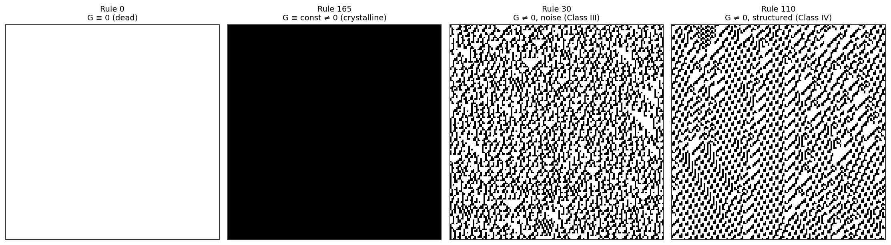
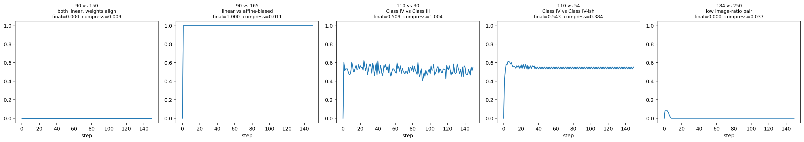
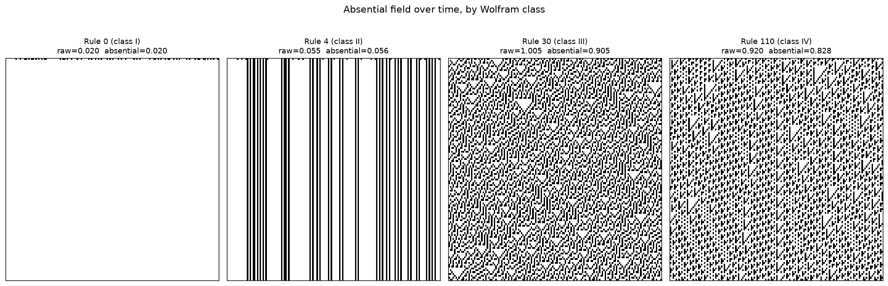
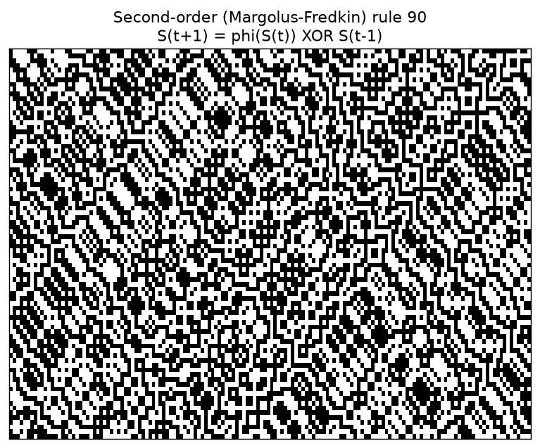
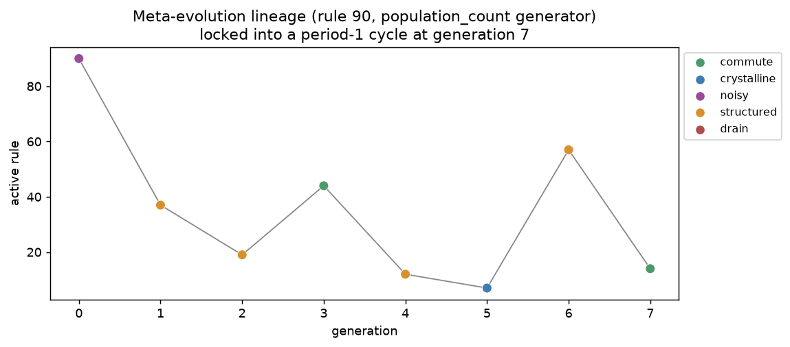

The building blocks, one at a time
Everything on this site is built from a handful of small, composable pieces. None of them are individually complicated — the interesting behavior comes from what happens when you combine them.
Boolean calculus, over GF(2)
Every state in this project is a row of bits — a sequence of cells, each either 0 (off) or 1 (on). The one operation almost everything is built from is XOR (⊕), addition modulo 2:
XOR is the natural "difference" operator for bits: it's 1 exactly
where two states disagree, 0 where they agree. It's also its own
inverse (A ⊕ B ⊕ B = A), commutative, and
associative — which is what makes it usable both as a
comparison tool (this project calls that role C)
and, run forward, as a way to combine signals without losing
information. GF(2) just means "the two-element field" — the
formal name for arithmetic where 1 + 1 = 0.
Everything is State → State
A state is a row of n bits. Every instrument on this
page — the derivative, the commutator, the absential mask, a
second-order memory step — takes a state in and returns
another state of the exact same shape back out. None of them
compress, expand, or reinterpret the state into something else.
That uniformity is what makes everything composable and comparable.
Because D(S), G(S), and the absential field
of S are all just rows of n bits, they can
be stacked over time into identical-shaped (steps, n)
grids and rendered as the same kind of black-and-white space-time
image you'll see throughout this site — and the same
compressibility diagnostic (how well a general-purpose compressor can
squeeze the image) can be run on any of them, no special-casing
required.
Elementary cellular automata
The substrate underneath everything: a row of cells on a circular
(wraparound) 1D lattice. At each tick, every cell's next value is
looked up from its own current value and its two immediate
neighbors — 8 possible 3-cell neighborhoods, each mapped to a
0 or 1. That lookup table, read as an 8-bit number, is the
rule number (Wolfram's numbering) — rule 110,
rule 30, rule 90, and so on. 256 possible rules in total. Applying a
rule once is the function this site calls φ
(apply_rule in code).
D, E, and the single-rule commutator G
For one rule φ:
G(S) is the operator commutator [D, E],
evaluated at S. The clean result here (proved, not just
observed): G(S) is the same for every possible
S, for every step, if and only if φ is
GF(2)-affine — i.e. φ(X) = M·X ⊕ c
for some fixed linear map M and constant bias
c. When c = 0 (rules 90, 150), that
constant is identically zero forever. When c = 1
(rules 165, 105), it's a fixed nonzero constant, every time —
the discrete cousin of [x̂, p̂] = iħ being a
constant operator rather than a property of any particular
wavefunction.

G(S) for four rules. Left to right: rule 0
(G ≡ 0, dead), rule 165
(G ≡ constant ≠ 0, the crystalline case),
rule 30 (G ≠ 0, noisy — Wolfram class III),
rule 110 (G ≠ 0, structured — class IV).
Cross-rule pairs and the five regimes
The real extension: instead of asking whether a rule commutes with its own derivative, ask whether two different rules commute with each other. Take one starting state, run it two ways — path 1 repeats (apply rule A, then rule B), path 2 repeats (apply rule B, then rule A) — and watch how much the two paths disagree (XOR'd together) over time.
That disagreement field reliably falls into one of five shapes:
- commute flat zero disagreement, forever — the two orderings are identical.
- crystalline flat nonzero constant disagreement — a fixed, permanent mismatch.
- noisy disagreement settles near 50%, and looks like noise to a compressor.
- structured disagreement is persistent but visibly patterned — compresses well below noise.
- drain disagreement spikes, then collapses to zero as both paths fall into a shared trivial attractor.
Structured divergence is the regime with no single-rule analog — for one rule against itself there's nowhere for "persistently related but never identical" to live. It only shows up once two distinct rules are in play.

Absential cells
A cell can be off for two very different reasons. It might be entirely outside the influence of anything alive — call that void. Or it might be off but adjacent to a live cell — off in a way that's explanatorily downstream of the live pattern next to it. Philosopher Terrence Deacon calls this second kind of off-ness absential: absence that does causal work by virtue of what it's absent relative to.
Formally it's the closed neighborhood of the live set minus the live
set itself — a one-line addition once defined. The open
question it raises: does watching the absential field's own
compressibility over time work as a faster or more sensitive
"is this Class IV?" detector than looking at G or the
raw state directly? See the findings
page for what the first test showed.

Reversible memory (second-order CA)
Ordinary elementary CA only look at the present to decide the future, which makes them irreversible — you generally can't run them backward. A small, well-known change to the recurrence fixes that by giving the rule access to its own immediately preceding state:
This is the Margolus–Fredkin construction: because XOR is its
own inverse, the same formula run "backward"
(S(t−1) = φ(S(t)) ⊕ S(t+1)) exactly
recovers the earlier state — nothing is lost. It's the
standard way 1D CA get both memory and reversibility at once, and it
slots into this project directly: D(t−1) (this
project's own derivative, evaluated at a past state) is just another
array that could be fed in as the memory term instead of the raw
previous state.

Rules birthing rules
The most speculative instrument so far. Instead of fixing one rule and watching a state evolve, let the state generate its own successor rule: at each generation, some function of the current state produces a new rule number, the relationship between the old rule and the new one is classified with the same five-regime diagnostic used for ordinary pairs, and then (in the mode implemented here) the new rule takes over and the state keeps evolving under it.
Each generation's parent→child handoff can drain (collapse into a shared trivial fixed point — no new layer, pure absorption), diverge as noise (no relationship at all), or land in structured divergence — the child rule staying in a persistent, legible relationship with its parent rather than collapsing or dissolving. What happens to the whole lineage over many generations is the open question; see the findings page for what's actually been observed so far.

Hypotheses & open questions
-
What exactly predicts the drain regime?
Lossiness (
image_ratio) correlates but doesn't fully explain it — two rules can share an identical image_ratio and still differ in whether they drain against a third rule. The real condition looks like a finer structural compatibility between the specific pair, closer to Moore & Boykett's permutivity conditions than to any single scalar score. - Does the absential view actually detect Class IV better than existing tools? First test was inconclusive (see findings) — open whether a better-designed test (more rules, rules with genuine localized structures) changes that.
- Does generator choice change what meta-evolution finds? Early evidence says yes — richer generators search longer before locking in — but the sample is small. Open: does a longer search reach a more diverse set of stable rule-space cycles, or just take longer to find the same kind of cycle?
- Could rules live in the same shape as state? Every instrument above maps State → State. Could "rule" become a first-class citizen of that same shape, rather than a fixed 8-bit number sitting outside it? The real answer is non-uniform CA — one rule per cell instead of one global rule — which traces back to von Neumann's self-reproducing automaton. Not implemented here yet.